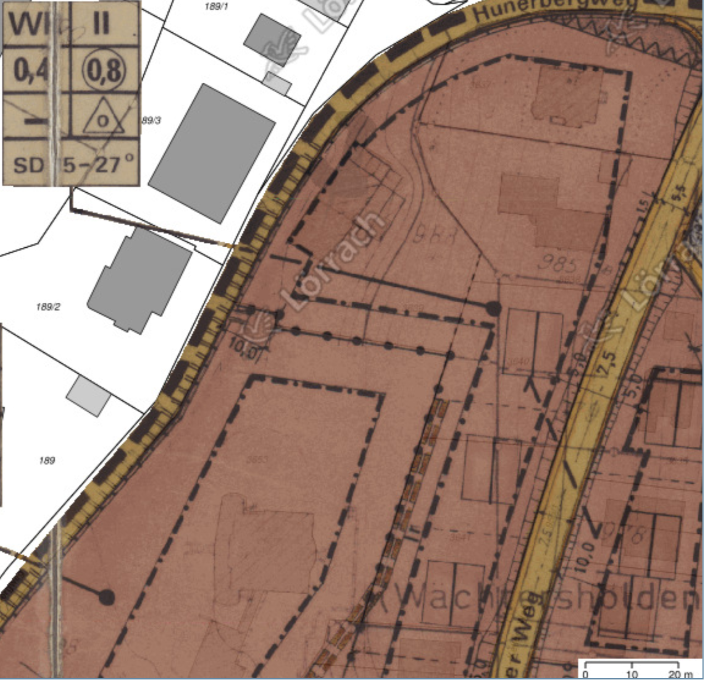

Willkommen am Waldrain!
Anschrift: Carl-Keller-Weg 6, D-79539 Loerrach – Ort – Anfahrt
Inhaltsangabe
Gemeinschaft
Leitfaden für Hausprojekte
Der Leitfaden für Hausprojekte bietet eine wichtige Grundlagenlektuere mit Aufsaetzen zu folgenden Themen:
- Warum dieser Leitfaden?
- Die Geschichte der Hausprojekte
- Grundlagen Rechtsformen
- Selbstverständnis
- Rechtsform - Findung
- Gängige Rechtsformen
- Vergleich Genossenschaft - Mietshäuser Syndikat
- Privateigentum & Selbstorganisierung
- Haus - Findung
- Umgang mit Banken
- Bank - Konditionen
- Kritische Bankenwahl
- Förderung
- Die soziale Frage
- Moderation und Mediation
- Gruppenprozesse
Wichtige Grundsatzentscheidung
Soll die Spekulation und Veraeusserung fuer immer und ewig verhindert werden?
- ja –> mietshaeusersyndikat, gmbh + verein
- nein –> genossenschaft
Will die Hausgemeinschaft unabhaengig bleiben?
- ja –> eigene kleine genossenschaft
Konsum und Gemeinschaft
Eine Reportage des SRF zum Thema Konsum, mit einem interessanten Beispiel einer Gemeinschaft in der Schweiz:
Der 3. Beitrag handelt von einer Gemeinschaft, die eine sehr neuen und recht extremen Form lebt.
Macht mut, solches zu wissen, finde ich!
2. WohnWandelSymposium
Michael und Jeremy nahmen teil an dem 2. Symposium WohnWandel – Gemeinschaftliches Wohnen in LÖ am Samstag 30. November 2019, wo sie Vortraege uund detaillierte Infos erhalten konten von:
- Lebenswerte Nachbarschaft Basel
- Helma Haselberger vom Mietshäuser Syndikat Freiburg
- Burghard Flieger, Innova eG ueber Hausgemeinschaftsgenossenschaften
Lebenswerte Nachbarschaft Basel
Lena ist die Bau- und Wohngenossenschaft Lebenswerte Nachbarschaft in Basel.
Das Konzeptpapier von Lena ist lesenswert.
- qm pro person, verschiedene wg-varianten, geminschaftraeume
- energie: 35 anderes 28 essen 34 wohnunen (davon 2/3 heizen), 12 transport
- kleine kuechen, eine grosse gemeinsame
- gemeinschaftlich essen, kochen, gemuese produkte
- gemeinschaftsbad
- sternenbar
- ateliers
- lautes, leises
Mietshaeusersyndikat
Das Mietshäuser Syndikat entzieht Mietshaeuser dauerhaft der Immobilienspekulation.
- hausverein bestimmt alles im haus
- syndikat gmbh wacht darueber, dass nicht privatisiert wird
- beide zusammen bilden die haus-gmbh, mit je einer stimme, und alle entscheidungen muessen einstimmig sein
- haus gmbh has 25000 eigenkapital, je haelftig syndikat und verein
- 150 hausprojekte
- finanzierung von kfw bank fuer energieeffizientes bauen
- vom bw zu 0 preozent fuer 2400 euro pro qm fuer sozialer wohnungsbau
Burghard Flieger
- Projektbuero Freiburg
- 4 prinzipien von genossenschaften:
- foerderung: ziel nicht kapitalverwertung, sondern nutzen, z.b. gemeinschaftliches wohnen
- identitaet: mieter und vermieter identisch
- demokratie: ein mensch ein stimme unabhaengig von einlage
- solidaritaet: bei krisen und aufbau treten individualle interessen zurueck
- mitgliedschaft:
- unkomplizierter beitritt
- anteile kaufen, i.d.r. kann jeder anteile kaufen, billig
- pruefung: plichtpruefungen, insolvenzsicher
- haftung: maximal anteil
- austritt einfache kuendigung mit frist
- vorteile:
- nicht viel geld noetig
- genossenschaft ist immer richtig, wennn viele menschen gleichberechtigt wirtschaften wollen haftungsbegrenzt mit einfachen ein und austritt
- verein kann nicht wirtschaftlich aktiv sein
- gmbh keine gleichberechtigung und kein einfache ein und austritt
- vor allem relevant, um privateigentum zu vermeiden
- sonst gibt es spaetestens nach ca. 10 jahre probleme
- swot:
- strength: finanzielle mittel zusammentregen, unabhaengigkeit vom einzlelnen
- weakness: weniger finanzieller anreiz, knowhow fehlt (weil sie was verdienen wollen0
- opportunity: wahrnehmung, akzeptanz, glaubwuerdigkeit aufgrund von demokratie und foerderauftrag
- threat: kosten muessen gedeckt werden, wichtige aktaeure steigen aus
- 3 phasen: 1 orientierung, 2 planung, 3 gruendung
- meilensteine: satzung, geschaeftsplan, gruendung
- gruendungsversammlung, einreichung beim verband, eintrag register
- wichtige schritte: wirtschaftsplan, satzung, bauplanung
- dachgenossenschaft:
- bei 10-12 menschen rate ich eher ab von einer genossenschaft
- kosten 1500-2000 euro pro jahr
- dachgenossenschaft kann das verteilen helfen
- dachgenossenschaft ist eigentuemerin von grundstueck und gebauede
- bewohner sind mitglieder, und haben nutzungsvertraege
- genossenschaft in gruendung ist rechtsfaehig
- vorvertrag kann geschlossen werden
- fragen:
- fuer einzelgenossenschaft:
- welcher verband? zentralverband der konsumenten … kooperation verein und dachverband … berlin … zdk-hamburg.de mach beratung
- welches register? fest geregelt, haengt vom ort ab.
- fuer dachgenossenschaft:
- welche dachgenossenschaft?
- gibts in loerrach oder in der naehe eine?
- foerderung?
Genossenschaft
Wir haben uns fuer die Gruendung einer kleinen Genossenschaft entschieden, bei der wir von der ZdK unterstuetzt werden.
Artikel zum Thema:
- Warum brauchen wir eine ‘Kleine Genossenschaft’? – es ist zwar anachronistisch und teuer, aber leider gibt es dafuer heute keine echte alternative.
Konzept
- in arbeit
Satzung
- in arbeit
ZdK
- Zentralverband Deutscher Konsumgenossenschaften e.V.
- Ansprechpartnerin Frau Farnoush Bejnoud, Syndikusrechtsanwältin, Tel 040/2351979–8, E-Mail info@genossenschaftsgruendung.de, nur vormittags
- frau orgelmann
- erstmal email schicken
- konzept
- satzung
- finanzplan
- auch kleine genossenschaften mitglied bei der zdk, z.b.
- https://www.gemeinschaft-burghofstauf.de/die-bewohner
- https://www.ourhausleipzig.de/index.php/projekt/wir
Ideen zur Satzung
- klima- und nachhaltigkeits- und andere ziele in der satzung messbar formuliren
- z.b. kommunikation entsprechend gfk gewaltfreie kommunikation
- wie finden entscheidungen statt? z.b. einstimmig, qualifizierte mehrheit
- wer darf vorlagen einreichen zur entscheidung
- oekologisch gemaess norm soundso, z.b., SIA
- creative commons license
- qualifizierungspunkte erfassen fuer leute, die in die genossenschaft aufgenommen werden
- z.b. koenten leute eine langsame infiltrierung anstreben, um spaeter die gueter der genossenschaft zu verkaufen
- nicht veraenderbare punkte festhalten
Darlehensvertrag an eine Genossenschaft
Ein sehr gut ausgearbeiteter Vertrag fuer Darlehen an mit einer Genossenschaft mit Rueckzahlung usw. gibt es in der Gemeinschaft in Degersheim – Rene Duveen fragen.
Brainstorming Name
- oberelben, ask family elben whether oberelben is ok
- oberelfen
- eichenhaus, eichenhang, eichengrund, eichenrod
- Attis, a minor god of vegetation, fruits of the earth and rebirth
- dorno, Primitive elvish for oak
- monte gigolo (huener > huehner > gueckel > gigolo)
- eichennest
- waldelfen
- Zum Waldrain
- baumhirten
- Ask und Embla, the first human beings in Norse mythology, created from trees and whose names may mean “ash” and “elm”
Wohnraumpreise in Degersheim
Gedanken und Erfahrungen von Pia und Rene aus einer existierenden Gemeinschaft:
- quadratmeterpreise mit punktesystem
- verschiedene preise fuer wohnraum oben, unten (mit gartenzugang) und in der mitte (am guenstigsten)
- alle bewohner ziehen sowieso im haus herum, es aendert sich dauernd
- nordllicht, suedlicht, gang wird mit bewertet
- das alles ergibt ein punktesystem
Grundstueck
Lageplan
{kind=link}

Bebauungsplan
- Bebauungsplan Huenerberg Sued (Bild)
- Bebauungsplan Huenerberg Sued (PDF)
- Legende
- Satzung
- Begruendung
{kind=link}

Das Baufenster ist mit dicken Strichpunkten markiert und erfordet ca. 5 meter Abstand vom Carl-Keller-Weg und noch mehr von der Ecke, die an die Villa Elben grenzt.
Detailed Site Plan
Grundflächenzahl
- Mass der baulichen Nutzung (Wikipedia)
- Grundflächenzahl (GRZ) (immoverkauf24)
- Die GRZ beträgt 0,4: 417 qm dürfen bebaut werden, inklusive aller Carports, Müllhäuschen und ähnlichem.
- Die GFZ beträgt 0,8: 834 qm Wohnfläche dürfen errichtet werden.
- [Infos zum Bebauungsplan] vom Architekten
Infos zum Bebauungsplan
Ein paar Infos zum Bauplan von einem befreundeten Architekten, Wolfgang Gottschalk, Architekt, am 2019-11-08:
Q: Koenntest du mir sagen, wo die genauen Baugrenzen innerhalb dieses Grundstueckes verlaufen?
A: Siehe die dicken Strich-Punktlinien auf dem Bebauungsplan.
Q: Wie viel Wohnflaeche, Kellerflaeche und Volumen duerften wir da hinstellen?
A: Grundfläche des Gebäudes 0.4 x 1040 qm = 416 qm, Geschossflächen 0.8 x 1040qm = 832 qm, offene und geschlossene Bauweise – d.h. Einzelhaus oder Doppelhaus möglich, max. 2 Wohneinheiten pro Haus.
Q: Gibt es Vorschriften und Beschraenkungen bzgl. Dachausformung, Stockwerkszahl, usw.?
A: Satteldach mit einer Dachneigung von 15-27°, max. 2 Vollgeschosse + Keller + Dachgeschoss. Allerdings ist der Bebauungsplan jetzt schon fast 40 Jahre alt. Deshalb wäre eine entsprechende Beratung bei der Stadt für dein Vorhaben sinnvoll.
Man sollte unbedingt eine Bauvoranfrage stellen bevor man den entgueligen Bauantrag stellt.
Offiziell darf man also laut dem Bauplan von 1978 nur 4 Wohnungen draufstellen und 800 m2 Wohnfläche schaffen.
Bausekretariat
- stadtplanung
- 2 we, oder dh mit je 2 we
- architektenhonorar 2/3 vor bauanfang
- wer ist zustaendig
- bauberatung
- BauinseL, Telefon: 0 76 21 4 15-322, E-Mail: baurecht@loerrach.de
- Zimmer 14.11, Stadt Lörrach, Rathaus, Luisenstraße 16, 79539 Lörrach
- Chantal Koenig oeffnungszeiten mo 8-11, di + fr 8-12, do 14:30-17:30, mi + do vormittag geschlossen
- Baurecht 14 stock Chantal Koenig 1412 Herr Proisl 141 Frau Bingemer 1417
- Vermessung 9 stock Alice Schulze Gelaendeprofil eur 200 + mwst = 238
Pachtvertrag
- Ein Erbpachtvertrag kann Laufzeiten zwischen 50 und 99 Jahren haben. Weder Sie als Pächter noch der Verpächter kann den Erbpachtvertrag kündigen. Die lange Laufzeit und der Kündigungsschutz geben Ihnen die Sicherheit, dass Sie nicht kurze Zeit nach dem Hausbau vor die Haustür gesetzt werden. Ausnahme: Der Verpächter darf den Vertrag kündigen, wenn Sie das Grundstück verwahrlosen lassen oder wenn Sie ohne schriftliche Zustimmung des Verpächters statt eines Wohnhauses beispielsweise eine KFZ-Werkstatt bauen. (Immnet.de Pachten)
- Vorteil – Ihr größter Vorteil als Pächter: Sie müssen “nur” den Hausbau finanzieren und für das Grundstück eine jährliche Pacht zahlen. Es fällt kein Kaufpreis für das Grundstück an.
- Nachteil – Nach Ablauf der vereinbarten Laufzeit fallen Grundstück und Gebäude an den Grundstückseigentümer zurück. Dieser zahlt Ihnen zwar das Haus (etwa zwei Drittel des Zeitwertes), Grundstück und Haus sind jedoch für Sie als Pächter verloren. Denken Sie bei maximalen Vertragslaufzeiten über 99 Jahre deswegen an mögliche Erben.
- Kosten – Die jährliche Pacht kann, ebenso wie Mieten, steigen. Die Pacht sollte an einen offiziellen Index gekoppelt sein. Der Mietspiegel als Referenzgröße ist ungünstig. Günstiger ist der Verbraucherpreisindex (VPI) des Statistischen Bundesamtes, oder der offizielle Bodenpreisrichtwert.
Bauvoranfrage
Geländemodell
- Digital Elevation Model DEM
- digital terrain model dtm
- https://www.opendem.info
- https://www.bkg.bund.de/DE/Home/home.html
- Digitale Geländemodelle (DGM)
- Digitale Landschaftsmodelle (DLM)
- German Combined Quasigeoidmodell (GCG) beschreibt die Höhenbezugsfläche der Landesvermessung
- https://gis.stackexchange.com/questions/179104/free-digital-elevation-terrain-model-of-europe-or-germany
- /j/tmp/GMTED2010_Spatial_Metadata.zip
- https://gis.stackexchange.com/questions/1763/seeking-free-elevation-data-for-europe
- how to read NASA .hgt binary files
- https://stackoverflow.com/questions/357415/how-to-read-nasa-hgt-binary-files#17095113
- https://www.google.ch/maps/dir/Carl-Keller-Weg,+79539+Loerrach/47.6121959,7.6686263/@47.6118758,7.668122,19z/data=!4m8!4m7!1m5!1m1!1s0x4791b0ec8f16a0ad:0x3bbe0f73006ed0bf!2m2!1d7.6686692!2d47.6118764!1m0
- 10 more meters north and east:
- https://www.google.ch/maps/dir/Carl-Keller-Weg,+79539+Loerrach/47.6122209,7.6688301/@47.6118758,7.668122,19z/data=!4m9!4m8!1m5!1m1!1s0x4791b0ec8f16a0ad:0x3bbe0f73006ed0bf!2m2!1d7.6686692!2d47.6118764!1m0!3e2
- SW 47.612176 7.668408
- SE 47.612150 7.668693
- NE 47.612386 7.668797
- NW 47.612407 7.668512
- /j/src/python/dtm/srtm-python/jt_srtm_benner.py
- Returns all four elevations as 203 metres
- This output is wrong, because no point in Loerrach is as low as 203 metres:
- Geografische Daten der Stadtgemarkung Lörrachs:
- Tiefster Punkt: 268,5 Meter ü. NN (der Fluss Wiese an der Landesgrenze zur Schweiz)
- Höchster Punkt: 558,1 Meter ü. NN (Hochstand im Röttler Wald)
- https://stackoverflow.com/questions/357415/how-to-read-nasa-hgt-binary-files
- /j/src/python/dtm/test $ python jt_test_benner.py
- [[‘SW’, 47.612176, 7.668408], [‘SE’, 47.61215, 7.668693], [‘NE’, 47.612386, 7.668797], [‘NW’, 47.612407, 7.668512]]
- SW 333
- SE 338
- NE 337
- NW 333
- /j/src/python/dtm/python-hgt $ python jt_hgt_benner.py
- /j/src/python/dtm/dtm_europe/N47E007.hgt
- 3601 rows
- 3601 min 192 m max 979 m
- 3601 min 429 m max 1307 m
- [[‘SW’, 47.612176, 7.668408], [‘SE’, 47.61215, 7.668693], [‘NE’, 47.612386, 7.668797], [‘NW’, 47.612407, 7.668512]]
- SW 333
- SE 338
- NE 337
- NW 333
- https://get-direction.com/altitude.html
- carl-keller-weg loerrach
- Latitude: 47.611956
- Longitude: 7.668666
- Elevation: 322.00 meters
- Huenerberg 403 m
- https://www.freemaptools.com/elevation-finder.htm
- 334 meter low end, 351 high end
- https://www.whatismyelevation.com/
- says i am at 364 m in my attic office
Haus
Passivhaus
Der Vortrag ueber Passivhaeuser sollte zur Pflichtlektuere erkoren werden; die beste Info zum Thema oekohaus und heizung die ich bisher gefunden habe, von Maris empfohlen:
- Wie man ein klimafreundliches Haus baut
- KfW-Effizienzhaus (40, 55, … wieviel prozent des energieverbrauchs von einem typischen neubau braucht dieses haus?)
- Passivhaus
- Effizienzhaus-Plus
- 20 euro heizkosten pro monat pro wohnung
- 5 bis 10% mehrkosten beim bau
- 15% baukostenzuschuesse bundesweit, z.t. pro bundesland mehr
Themen:
- tiny houses
- abwasserreinigung
- politik
- viele private bauprojekte aufgelistet
Normen und Zertifizierungen
- dgbm deutsche gesellschaft fuer nachhaltiges bauen
- the standards listed in the passive house presentation
- check the SIA norms
Baukosten
- keller
- https://blog.massive-wohnbau.de/index.php/detail/keller-bauen-kosten-und-planung.html
- eur 1200 pro qm – 200 qm –>
- 240000 keller
- haus
- https://www.bauratgeber-deutschland.de/hausbau/hausbau-kosten/
- Beispielhaus: kleines, eineinhalbgeschossiges Einfamilienhaus mit Satteldach, 90 m2 Grundfläche (ca. 10,5 x 8,5 m) und 120 m2 Wohnfläche
Mit fuenf multipliziert: 550 qm grundflaeche, 600 qm wohnflaeche
300000 rohbau 100000
300000 dach fenster tuer 60000
450000 technik 70000
100000 innenausbau 20000
200000 architekt 40000
1350000 summe 270000
270000 baunebenkosten 10-20%
1620000 total inkl baunebenkosten
Tiny House
Zwei interessante Schweizer Projekte mit Tiny Houses sind:
Bauideen
- Haus im Gewaechshaus
- Ihre Visionen 2050 – Fünf Vorreiter der Digitalisierung in der Schweizer Bauwirtschaft sagen voraus, wie sie die Zukunft aus der Perspektive ihrer aktuellen Führungsposition sehen. Denn: «Nichts ist so beständig wie der Wandel.»
- dachausbauten oder dachfenster, um in alle raeume sonnenlicht reinzulassen
- bett unter dem dachfenster wie in dem terassenzimmer im waldhaus luetzelflueh
- breiter gang statt gemeinschaftraeume
- jacuzzi beheizt auf dem dach
- rueckzugsmoeglichkeit mit vier kumpel, ohne das andere bewohner dazustossen koennen oder man sich wehren muss
- gewaerchshaus an der suedseite (rene beheizt im fruehling sogar)
- wintergarten (rene beheizt im fruehling sogar)
Baumaterialien
- lehmputz
- holzstaender bau, holzfaserplatten, holzschalung oder lehmputz aussen, lehmputz innen, viel glas
- umlaufende balkons rundum und grossen dachueberstand, damit fenster leicht zu putzen von aussen und auch um sonneneinstrahlung zu reduzieren im sommer.
- grosser keller mit fenster nach vorne und grosse offene werkstatt fuer gemeinschaftsraeume und ateliers und werkstaette
- stellplaetze und anschluesse vorsehen fuer bauwagen, baumhaus, evtl. tiny houses
- alle oberflaechen wo nicht glas oder tuer: begehbar, begruent oder solarpanel
- lehmputz selber vor ort herstellen
Holzhaus, Burkart und Thoma
Ein Vortrag von Florian Thoma, Dipl. Ing., St. Johann, Pongau, Österreich, gehalten am 24. Internationalen “Wissenschaftlichen Ausblick” Welt-Kongress von The World Foundation for Natural Science, vom 31. Oktober - 3. November 2019, in Ulm.
Der Vortrag zeigt Möglichkeiten, die sich uns beim Bauen auftun, wenn wir die Geschenke der Natur nutzen und auf Chemie verzichten. Häuser in echter Holzbauweise verbrauchen keine Energie und sind am gesündesten für uns und die Umwelt. Wir können mit Freude vorausblicken, denn es gibt keine Zukunft, sondern nur das Potenzial der Gegenwart. Der 1 stündlicher Vortrag hat mich sehr beeindruckt.
Die Firma Thoma wurde 1990 gegründet, weil Erwin Thoma, der Förster, für seine Kinder das gesündeste Haus bauen wollte. Heute ist das Unternehmen als umweltfreundlicher Industriebetrieb weltweit ausgezeichnet. Die Firma ist evtl. auch für unsere Weiterentwicklung eine gute Adresse, um weitere Ideen zu sammeln. Die World Foundation for Natural Science ist auch sehr interessant:
Holzstaenderbauweise
- in der fabrikhalle vorgefertigte fertigelemente
- damit ist auch eine komplexe gebaeudeform realisierbar
- alle rohre und technik kann schon eingebaut werden
- ales wird in der fabrik vorgefertigt
- das ist aiuch eine oekolgischere bauweise, effektiver in der fabrik
- kein grosser kran notwendig
Neue Holzbautechnik auf der Swissbau 2020
- Krinner Schraubfundamente
- Betonlos sofort belastbar
- Haus hinstellen ohne Betonfundament
- Schrauben in allen Groessen
- Je nach Groesse mit einer Montagemaschine oder mit einem Bagger
- Wilma Holz Beton Verbundsystem
- Tragegeruest aus Vollholz, vorgefertigte Betonbodenplatten draufschrauben, minimal ausgiessen
- Minimaler Bauaufwand, optimale Schalltrittdaemmung
- Bio-XLam Massive Leimfreie Holzwand
von ligna construct
- Holzverbundwaende in allen Dicken je nach Statik
- mit Holzwolle, Massiv, …
- Fertige Paneelen geliefert mit Kabelkanaele frei vorgefertigt fuer freie Infrastrukturverlegung innenseitig
- Schweizer Holz
- eggo Holzkastenelemente
von Egg Holz Kaelin AG
- Selbsttragende befuellbare Fussboden-, Decken- und Dachpaneele aus Holz
- Befuellung nach Bedarf: thermische Isolation, Schalldaemmung, Trittschall, Raumschall, Leitungen verlegen
- Lignatur AG Holz Decken- und Dachelemente
- Waermedaemmung, Schall- und Trittschalldaemmung
- Tragen ueber grosse Spannweiten
- Feuerfest
- Braun AG Gossau CH
- Grosshandel für Holzwerkstoffe
Heizung
- holz + solar + erde + waermetauscher
- riesiger warmwasserspeicher
- beheizter steinvorrat?
- niedrigtemperatur fussbodenheizung, mindestens im bad und wohnzimmer
Warmwasser und Heizungsspeicher
- warmwasserspeicher modell jenna
- 4000 liter inkl. einen 500 liter boilr in dem speicer eingebaut duerfte reichen fuer 6 wohungen und 12 personen
- speicher wird geheizt durch: thermisch durch solaranlage und grundofen
- im sommer auch elektrisch durch photovoltaik
- boiler ist im speicher eingebaut und wird vom speicher geheizt
- waermepumpe mit boiler fuer heizung?
Wasserfuehrender Holzofen
- Holzofen mit Wassenheizung und Backmoeglichkeit
- Rene hat einen Holzheizungsherd Oekoalpin 100plus von Pertinger Holzherde
- Neu gibt es jetzt auch schon die noch besseren Sturzbrandöfen.
- Waermetauscher fuer Ofenrohr – groesesseres rohr drum rum schweissen und anschluss oben und unten
Bad
- in der wand eingebaut geheizte kupferrohre als heizung und handtuchhalter
- billiger und besser als ein badheizkoerper
Keller
- lehmboden lassen, abfallend?
- kellerdecke ebenerdig mit strasse
- betonfuesse, rostfreie stahltraeger, holzbalkenstaender mit dreiecksaussteifung
- isolation seitlich
- erdboden im sommer heizen und als waermespeicher nutzen
Technik
Isolation
Daniel hat Informationen zum Thema Isolation am Bau geteilt:
- Ein sehr informatives Filmchen von 20Min zum Thema Isolation: Wärmedämmung – Was ist sinnvoll?
- Konrad Fischer:
Holzfaserplatten
- sind oekologisch und gut
- holzstaenderbauweise
- lehmputz innen
- lehmputz aussen, mit eine duennen schicht kalkputz oben drueber zum schutz gegen regen
- umlaufende balkons und weiter dachueberstand, damit die waende vor feuchte geschuetzt sind
Kompostklo
- photos und skizze von renes kompostklo
- terra preta als einstreu im kompostklo
Gebrauchte Fenster
Rene hat acht gleich grosse fenster. Koennte man in einen grossen bauweagen einbauen, um ihn aufzuhuebschen.
Architekt
- madlee empfiehlt Gerhard Zickenheiner, der jetzt im Bundestag für die Grünen sitzt. Sein Büro Jansen Zickenheiner hat er abgegeben an Marco Jansen Gerhard könnte euer Projekt glaub ziemlich interessant finden und unterstützen… Madlee kennt ihn vom gymy früher..
- Wolfgang Gottschalk
- Willy Lindemer Wi-Li@gmx.de 0171-8481611
Projektplaner
- Planer für Projeksteuerung in Tübingen.
- Ulrich Plate leitet in Binzen ein Projekt für “anderes Bauen”, nicht der höchst bietende bekommt Land, sondern es muß Sinn machen, genaueres weiß ich nicht. Das liegt ja vor der Haustüre, um sich evtl. beraten zu lassen. Vielleicht aus Infos über Förderungen solcher Projekte.
- Plathe Ulrich, Freier Architekt in Tübingen, Holzmarkt 7, 07071/924525
Ansprechpartner
- klima und nachhaltigkeit: fairnetzt, baurechtsamt
- bauvolumen: wolfgang gottschalk
- abrutschen: wolfgang, alex dedek
- universitaeten: nachhaltiges bauen und oekoligisches heizen mit null energie
- dhbw duale hochschule: architektur, bauwesen, energieeffizienz, nachhaltigkeit?
Unistudien
- Thomas Gröbli vom ethik-labor.ch
- Es gibt an der ETH viele, die zum Thema Energie und Bauen arbeiten
- Energy Science Centre ETH, Anlaufstelle für alle energiebezogenen Fragen; die kennen die ETH-Leute gut und können sicher weiterverweisen.
- Masterprogramm für Energie und Bauen – Hier könnte sicher Kristina Orehounig weiterhelfen.
- Ich würde sicher aber auch bei den Fachhochschulen schauen, wo es sehr viel Fachwissen zu diesen Themen geben wird.
- Beni Rohrbach könnte allenfalls weiterhelfen
- Dann aber sicher auch die Leute vom der Fachhochschule Nordwestschweis MAS FHNW Nachhaltiges Bauen.
- Dr. Wahbeh of FHNW
Garten
- teiche anlegen
- regenwasser sammeln
- tiere halten?
Raumnutzung an der Strasse entlang
- wasser + kompostklo + waermespeicher in wasser oder stein?
- wasserspeicher – unter dem stellplatz?
- heizung mit holzhackschnitzel
- 5 meter streifen an der strasse entlang als bunker fuer holzhackschnitzel ausbauen
- 15 meter langer zylindrischer wassertank 50 kubikmeter sleicher unter dem stellplatz einlagern
Stuetzmauer
- https://awfrance.com/grundstuck/stutzmauer-berechnung-und-konstruktion
- naturstein? holz? beton? gabionen?
- https://duckduckgo.com/?q=ecological+footprint+gabione+concrete
Bagger
- price in hardly ever under 10k
- buy a new one and share with or sell to cipriano
- nicola has one in her garden. who does it belong to? Magnus will ask.
- ask dal grande, falk, daniel
- ask the poeople with a garden beside the road up to the tuellinger lindenplatz
- ask haring: the one he had is too old and broken. he recommended checking with Insolvenz + Nachlass Verwertungen Umkirch.
- facebook Gebraucht Bagger
- Verkaufe verschiedene Minibagger und Radlader – K2 Maschinenhandel tel 015223138393, Alte Dorfstraße, 79682 Baden-Württemberg - Todtmoos
Oekologie, Nachhaltigkeit, Autarkie
Holzkohle
- Kon-Tiki8303.ch
- CharNet — Fachverband fuer Pflanzenkohle und Pyrolyse
- Erste gesamtschweizerische Fachtagung zu Pflanzenkohle & Pyrolyse am 2020-03-12 im Restaurant Seegarten, Basel – pflanzenkohle im urbanen und kommunalen kontext
- koehlern
- 2 kg trockenes holzhaecksel max 30% feuchtigkeit –> 4 kWh waerme + 400 gramm pfalnzenkohle –> 1250 gramm co2 der luft entzogen wenn im boden gespeichert
- ein fuenftel vom holz gewicht kommt als pflanzenkohle raus
- 2 tonnen holz = ca. 3 steher holz (chf 3 * 130) –> 1 kubikmeter kohle (chf 400) + waerme als gewinn
- 1 tonne holz verkoehlern statt verbrenne: man gewinnt die haelfte der waerme plus 400 kg holzkohle
- das verhindert die emission von ca. 1 bis 1.2 tonnen CO2 in die athmosphaere
Autarke Abwasserklaeranlage
- Abwasserklaeranlage fuer Tiny House
- 8 * 3 meter wasserversickerungsbereich koennte reichen fuer waldrainprojekt
- urin und faekalien werden getrennt abgefuehrt via kompostklos
- urin hat man zu viel, ca. 1.5 bis 2 liter pro tag pro person
- das gibt einen ueberschuss
- faekalien kann man mit terra preta gemischt im eimer sammeln, ein paar wochen drin stehen lassen, dann auf eine miete tun
- 5 * 1 meter miete muesste fuer die faekalien-terra-preta miete reichen
- grauwasser wird in behaelter gesammelt
- kiesbett mit sand und oflanzen wird regelmaessig mit dem grauwaser geflutet, das dann versickert
Regenwasserbenutzung
- osmosefilter spaltet ja ueber die haelfte ab als verlust
- wohin damit?
- klare auflistung von verbrauchern die osmosefiltriertes wasser brauchen
- aktivkohlefilter reicht aus fuer das meiste
- vielleicht nur reinsttrinkwasser durch osmosefilter lassen
- alles uebrige, z.b., waschmaschine, dusche
- getrennte wasserversorgungsleitungen
- osmosewasser direkt am geraet holen
- aktivkohlefiltriertes wasser in den wasserleitungen zum kochen, haende waschen
- unfiltriertes regenwasser pur zum duschen, waschmaschine betreiben
Permakultur
- Kontakt Almut Schmidt-Rau macht seit 30 Jahren fast vollkommen autark eingener Garten Wasser, Gemuese, Honig, Imkerkurse, Naturheilpraxis, Terra Preta
Baumschnitt
- Tatjana: Um Wasserschosse zu vermeiden, sollte man bei Tagen mit absteigenden Mond schneiden (also wenn der Mond in den Zeichen von Sommersonnenwende bis Wintersonnenwende steht: Loewe Jungfrau Waage Skorpion Schuetze Steinbock).
Protokolle
Besprechung Alle 2019-11-08
Man müsste in einer Projektgruppe zusammen kommen und schauen was der beste Weg wäre. Am Einfachsten wäre es sicher, in einer kleinen Gruppe ein Projekt auszuarbeiten, es von einem Architekten zeichnen zu lassen und dann entweder in Form einer Genossenschaft oder in Form einer Eigentümergemeinschaft, Eigentumswohnungen/ Anteile zu verkaufen. Architekturbüros planen und beginnen mit dem Bau sobald die Finanzierung gesichert ist. Für uns wäre eine klare Strukturierung des Projekts und Übersicht über ein Kostendach sehr wichtig. Zudem müssten wir auch abklären, wie die rechtliche Situation für uns Schweizer wäre. Von mir aus gesehen wäre eine Realisierung mit 6 Anteilen preislich für uns tragbar… Geschätzte Gesamtsumme: 2-2,5 Millionen/ 600m2 Wohnraum/ 100m2 Gemeinschaftsraum Wesentlich hier wäre, von einem erfahrenen Projektleiter profitieren zu können. Hanglage ist immer aufwändiger zum Bauen, je nach dem wie erschlossen das Gelände ist ist es teurer oder günstiger…
Besprechung Alle 2019-11-20
- wer ist dabei?
- stellplatz planung
- besuch bei der stadt
- anzahl wohneinheiten
- dachausformung
- projektname huenerberger oberelben (hotel elben der name kommt von familie elben besitzer seit 1940)
Ich füge noch meine persönlichen und unvollständigen Notizen des letzten Treffens bei:
Die Bauordnungen 1978 kann man beim Geoportal einsehen.
GBR ist eine problematische Gesellschaftsform, da jedes Mitglied mit seinem Privatvermögen für alle anderen haftbar ist.
Es gibt für kleinere Genossenschaften wie unser Projekt eine günstige und unkomplizierte Form. Er erkundigt sich mit Jeremy.
Unverbindliche Vorstellungen für Platzbedarf
- B 60m2 evl im Dach
- G + S 100m2 2 Bäder
- Ma 100m2
- M + J 80m2 (oder je 50m2)
- Ma 45m2
- Mi Standplatz und Anschlüsse für den Bauwagen
Ergibt 380-400m2.
- Gemeinsame Terrasse?
- Gemeinsame Werkstatt?
Die jetzige Gemeinschaft am Huenerbergweg hat keine gemeinsamen Innenräume, nur der Garten wird geteilt. Man kann seine Türen zumachen und so funktionierts bestens.
Besprechung Genossenschafts 2019-12-05
- noch nicht noetig: Satzung + Finanzplan
- sondern nur konzept per email:
- gruendungsmitglieder
- was wird gebaut
- mitglieder
- foerderung der mitglieder (worin besteht sie, sind wir genossenschaftstauglich?)
- dann koennen wir den erster schritt einleiten:
- satzungsberatung
- sie schicken uns ein muster fuer satzungsberatung
- wir sollen keine mustersatzung aus dem netz nehmen
- keine fremde satzung ueberstuelpen
- word version benutzen, damit kommentare moeglich sind
Besprechung Alle 2020-01-20
Anwesend: S + G, Mar, Moc, B + Mi, M + J
Themen
- Prozessgestaltung, Hektik, Verantwortung, arbeitsteilige zeitlogische Abfolge, externe Moderation?
- Finanzplaene von moc und jeremy
- Webseite aufschreiben, strukturieren, wegen Uebersicht fuer alle, als Einfuehrung fuer neue Interessenten, Info an Uni und FH-Projekte
- Neuanfragen: Magnus Wiedmann, Joachim Laux
- Genossenschaft, Satzung, Gruendung, Ziele
- Kommunikation: koennen wir Richtlinien festhalten? Friedensvertrag? Fuenf Achtsamkeisuebungen?
- Entscheidungsfindung: Konsens?
- Architektur
- Architektenwahl
- Projektarbeit: fertigen Plan an Ausfuehrende uebergeben, oder Handwerker schon bei der Planung mit ins Boot holen?
- Oekologie und Nachhaltigkeit
- Wohnfläche pro Person, langfristiger Umgang mit zu erwartenden Veränderungen von Singles, Paaren, Familien, WGs; Führung durch eine Cluster-WG organisieren durch moc
- CO2, Holzbau, Holzkohle
- Beduerfnisse, Wuensche, Traeume
- Garten, Kompost
- Autark?
- Wasser: Sammeln? Aufbereiten?
- Abwasser: Kopmpostklo? Versickerung?
- Konkrete Schritte: Infrastruktur? Bauwagen? Stellplatz?
Besprechung Infrastruktur 2020-01-21
Anwesend: B + Mi, J
Thema: Standplaetze, Infrastruktur und Zufahrt auf das Gelaende einrichten.
- abwasser
- bagger?
- site plan – lageplan
- call bank – underway
- steine fuer terassenmauern? michael fragt beim steinbruch nach
- abholzen:
- vor ende februar baeume faellen
- benner um erlaubnis fragen
- von strasse runter folgende baeume faellen:
- 2 meter hohen stumpf entfernen
- eiche 40 cm durchmesser
- haselnussbusch
- haselnussbusch
- 1 esche, die zweite nebendran kan stehen bleiben
- haselnussbusch
Next Steps
- webseite wirklich informativ machen
- site plan, geodata, map, mark out borders for all to see
- infrastruktur erste schritte planen und umsetzen
- bauvoranfrage vorbereiten: Wolfgang Gottschalk, Willi Lindemer, Marco Jansen
- ab donnerstag 2020-01-30: vermessung mit magnus wiedmann und seine jungs
- separate finance plan for jeremy and genossenschaft
- pachtvertrag grundstueck mit baurecht